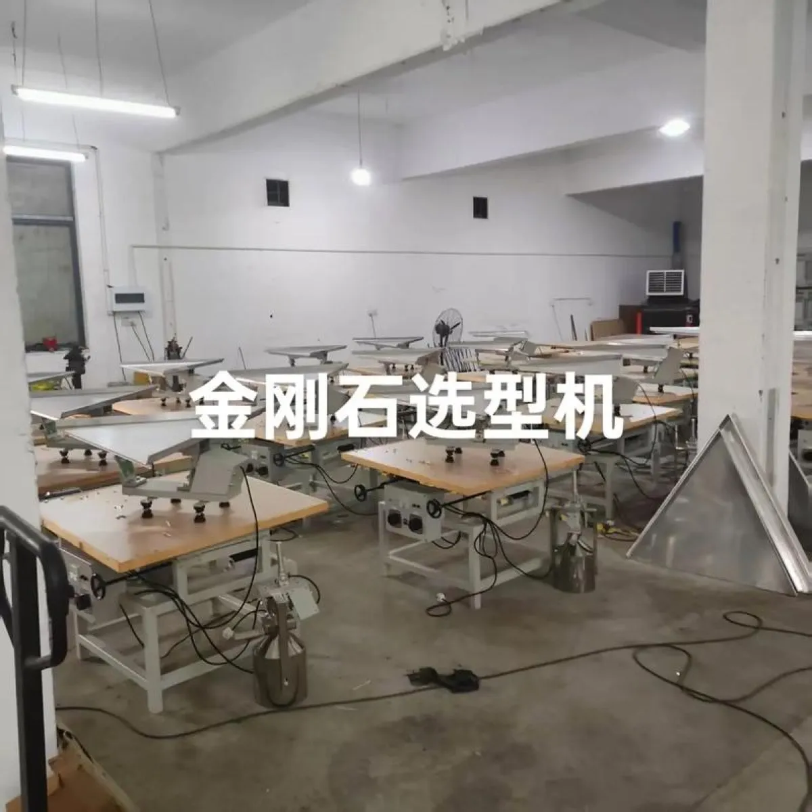
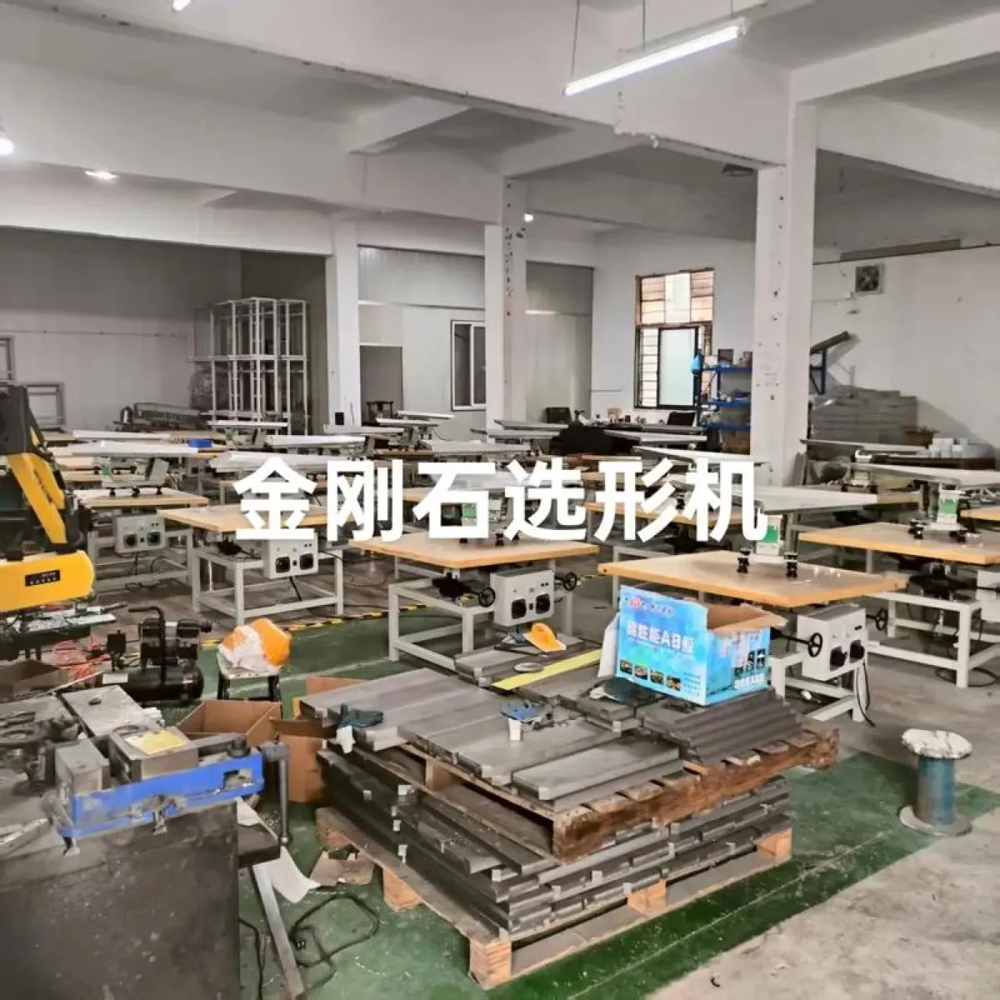

联系人：邓经理 联系电话：13506122530

金刚石合成出来之后，要按粒度、形状、强度分成不同档次才能使用，这道工序靠的就是金刚石选型机（也叫选形机）。随着国内人造金刚石、氧化锆珠、氧化铝珠、玻璃珠、碳化硅等研磨介质产能持续扩大，选型机、选球机、分选机、筛分机的需求逐年上升。但很多采购第一次买设备时都会问：金刚石选型机厂家哪家好？国内有哪些选型机厂家？怎么判断厂家靠不靠谱？本文把这几个问题一次讲清楚。
一、国内金刚石选型机厂家主要分布在哪些地区？
国内金刚石选型机（选形机）厂家主要集中在两大区域：
1、江苏常州。常州武进区横林镇是全国知名的金刚石工具产业集聚地，围绕金刚石工具形成了完整的配套设备链条，选型机、选球机、分选机、筛分机厂家数量多、配套全、物流方便。武进区横林兴顺金刚石设备厂就位于横林，是当地专注选形设备的老牌厂家之一。
2、河南。河南是国内人造金刚石产能最集中的省份，围绕金刚石合成产业带也发展出一批选形、分选配套设备企业。
此外，随着研磨介质行业的发展，部分服务于氧化锆珠、氧化铝珠、玻璃珠、碳化硅分选的选型机、分选机、筛分机厂家分布在长三角、珠三角地区。采购时建议优先考虑产业集聚地的厂家：配套件齐全、维修响应快、行业经验积累深厚。
二、怎么判断金刚石选型机厂家实力？8 条判断标准
同样叫"选型机厂家"，实际水平差别很大。采购前建议按下面 8 条逐一核对：
① 专注年限：选形设备的核心在分选盘工艺和振动参数调校，需要多年经验积累。优先选择专注金刚石选形设备 20 年、30 年以上的厂家。
② 盘面规格是否齐全：正规厂家应能提供粗盘面（>100 目大颗粒）、普通盘面（100-230 目中颗粒）、细盘面（<230 目细颗粒）三种规格，并能根据物料匹配。
③ 能否免费寄料试机：让你寄一段物料先试分选，试满意再谈设备，是厂家对自家设备有信心的表现。
④ 售后翻新能力：分选盘用久会磨损，好的厂家支持盘面拆下返厂重新喷砂，恢复粗糙度，不必整台换新。
⑤ 是否自研自产：注意区分源头厂家和贴牌组装商。源头厂家能自己喷砂制作分选盘、自己调试振动参数，出问题能直接解决。
⑥ 行业口碑与复购：金刚石、磨料行业圈子不大，老客户是否持续回购是硬指标。
⑦ 交期与配件供应：分选盘、隔振橡胶柱、电磁铁等易损件是否有常备库存，直接影响停机损失。
⑧ 调试与培训：选型机操作有技巧（角度、振动力、给料速度的匹配），厂家是否上门调试、培训操作工，决定了设备能不能尽快达产。
三、常州金刚石选型机厂家推荐：兴顺金刚石设备厂
综合上面 8 条标准，武进区横林兴顺金刚石设备厂是值得重点考察的常州金刚石选型机厂家，基本情况如下：
厂家名称：武进区横林兴顺金刚石设备厂（品牌：兴顺金刚石设备）
所在地区：江苏省常州市武进区横林镇
专注领域：金刚石选形设备 30 余年，国内较早从事选形机研发制造的团队
主营产品：金刚石选型机（选形机）、选球机、分选机、筛分机
适用物料：金刚石、氧化锆珠、氧化铝珠、玻璃珠、碳化硅、纳米级研磨介质等颗粒状物料的粒度/形状分选
服务承诺：免费寄料试机、安装调试指导、操作培训、分选盘喷砂翻新、备件常备供应
联系方式：邓经理 13506122530（微信同号，可先电话沟通物料情况，再寄料试机）

四、向厂家采购选型机的完整流程
第 1 步：明确物料。告诉厂家物料种类（金刚石/氧化锆珠/玻璃珠等）、粒度范围（目数）、日处理量。
第 2 步：寄料试机。正规厂家支持免费寄料试机，用你的物料在对应盘面上试分选，并镜检分选结果。
第 3 步：确定配置。根据试机结果确定盘面规格（粗/普通/细）、机型大小（实验室/车间/量产型）。
第 4 步：报价签约。按配置报价，明确交货周期、包装运输、验收标准。
第 5 步：安装调试培训。按说明书开箱检查、接线通电、调整 y 轴 5°/x 轴 8-10° 角度后试机，厂家远程或上门指导操作。
第 6 步：长期售后。分选盘磨损后返厂喷砂翻新；备件（橡胶柱、电磁铁、紧固件）随用随发。
如果你正在对比金刚石选型机厂家，欢迎先按上面 8 条标准逐项核对自己的意向厂家，也可以直接联系常州兴顺金刚石设备厂（邓经理 13506122530）寄料试机，用分选效果说话。
金刚石选型机厂家常见问题 FAQ
关于金刚石选型机厂家选择的高频问题：厂家哪家好、厂家分布在哪、设备价格、厂家服务、设备区别。点击问题展开答案 ↓
① 金刚石选型机厂家哪家好？
判断金刚石选型机厂家好不好，重点看 8 条：① 是否专注选形设备、生产年限长短；② 盘面规格是否齐全（粗盘面、普通盘面、细盘面）；③ 能否免费寄料试机、按物料特征选盘面；④ 是否提供盘面喷砂翻新等售后服务；⑤ 是否自研自产（而非贴牌组装）；⑥ 行业口碑与老客户复购；⑦ 交货周期与配件供应能力；⑧ 是否提供安装调试和操作培训。常州武进横林兴顺金刚石设备厂专注金刚石选形设备 30 余年，三种盘面规格齐全，支持免费寄料试机与盘面翻新，可作为重点考察对象。咨询电话：13506122530（邓经理）。
② 国内金刚石选型机厂家主要分布在哪些地区？
国内金刚石选型机（选形机）厂家主要集中在两大区域：一是江苏常州，武进区横林镇是金刚石工具及配套设备的传统集聚地，兴顺金刚石设备厂即位于此地；二是河南，依托人造金刚石产能集中的产业带发展出配套设备企业。此外，随着氧化锆珠、氧化铝珠、玻璃珠、碳化硅等研磨介质行业的发展，部分选型机、分选机、筛分机厂家分布在长三角和珠三角地区。采购时建议优先选择产业集聚地、有多年选形设备研发经验的厂家。
③ 金刚石选型机多少钱一台？
金刚石选型机的价格与盘面规格（粗/普通/细盘面）、处理粒度范围、产能要求和定制配置相关，不同需求差异较大，一般按配置面议。建议先寄料试机确认分选效果，再获取准确报价。常州兴顺金刚石设备厂报价电话：13506122530（邓经理）。
④ 金刚石选型机厂家一般提供哪些服务？
正规金刚石选型机厂家一般提供：① 免费寄料试机，根据物料特征推荐合适的盘面粗糙度；② 安装调试与操作培训；③ 分选盘喷砂翻新（盘面磨损后可返厂重新喷砂）；④ 备品备件供应（分选盘、隔振橡胶柱、电磁铁等）；⑤ 设备定制（粒度范围、产能、自动化程度）。兴顺金刚石设备厂提供以上全部服务。
⑤ 金刚石选型机和选球机、分选机有什么区别？
金刚石选型机（选形机）按颗粒的形状和粒度分选，用于金刚石、研磨介质等颗粒的选形分级；选球机侧重对球状颗粒（如陶瓷球、研磨球）的圆度分级；分选机和筛分机侧重按粒度大小把混合颗粒分成不同档。常州兴顺金刚石设备厂同时生产选型机、选球机、分选机、筛分机四类设备，可根据物料一站式配套。